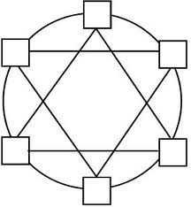

tipologie di rete
| immagine | nome | desc. | vantaggi/svantaggi |
|---|---|---|---|
|  | RETE PUNTO A PUNTO | Una rete si definisce punto punto quando tutti i device collegati alla rete hanno un cavo per ogni modo della rete. Cioè ogni computer o device può parlare direttamente con tutti gli altri computer. | VANTAGGI1:In caso di un guasto su un cavo tutti gli altri computer possono parlarsi2: Ogni computer può parlare con un altro computer in un solo passo SVANTAGGI1. Se la rete diventa grande il costo diventa enorme2. I computer che possono partecipare sono speciali cioè possono gestire tante schede di rete |
| RETE A STELLA | Nella topologia a stella,è una rete è quella rete che ha al centro un nodo responsabile di far parlare tutti gli altri nodi della rete. | VANTAGGI1: vantaggi di questa rete sono l'alta scalabilità.2 è una rete semplice è adatta a tutti i normali computer 3 è facile aggiungere nuovi elementi alla rete SVANTAGGIl'unico punto debole della rete è l'hub :se si guasta ,tutta la rete cessa di funzionare e si chiama spof2 il numerop di nodi della rete dipende dallwe caratteristiche del nodo centrale 3 l'uso din un ab è pericoloso perchè consente a uno degli altri nodi di leggere i messaggi scambiati. |
 |
RETE AD ANELLO | Una topologia ad anello è quiella rete in cui ogni nodo è collegato ad 2 altri nodi, normalmentev questa rete ha un verso di comunicazione. | VANTAGGI1:è facilmente espandibile2:è una rete semplice SVANTAGGI1:se un nodo o un cavo tutta la rete è bloccata2.per poter usare la rete bisogna aspettare il proprio turno |
 |
RETE A BUS | Una rete a bus è quella rete in cui tutti i nodi sono collegati a un cavo che si chiama bus. questo cavo consente a tutti i nodi di parlare contemporaneamente senza dover aspettare un turno. | VANTAGGI1:è facile aggiungere nuovi nodi2:i computer collegati sono molto semplici SVANTAGGI1:la rottura del bus blocca tutta la rete2.il trqaffico causato da un nodo può rallentare tutti gli altri |
 |
RETE AD ALBERO | una rete ad albero è una rete in cui alcuni nodi si comportano da responsabili di un pezzo della rete | VANTAGGI1: è una rete semplice in cui e possibile definire dei ruoli2:i nodi si possono facilmente aggiungere con un impatto con il nodo padre SVANTAGGI1:la comnunicazione tra due nodi può richiedere molti passi2:la rottura di un nodo blocca la comunicazione di tutti i nodi a valle |
Tipologie di rete
Suddivisione in base all'estenzione
| immagine | nome | descrizione | vantaggi e svantaggi |
|---|---|---|---|
| Lan | È una rete che copre una stanza ho al massimo un edificio | Vantaggi1.È una rete economica.2.È una rete semplice da realizare. Savataggi1.Per come è costruita nn può essere molto estesa.2.Normalmente è poco sicura |
|
 |
Can | È una rete che serve ha unire le reti di edifici separati. | Vantaggi1.Consensente di condividere facilmente risorse aziendali senza accedere ad internet 2.È norlamemente più sicuraSavataggi1.È più costosa di una lan 2.È complicata da realizare e da mantenere |
| Man | È una rete che copre una citta o parti di essa. | Vantaggi1.Consente di condividere risorse aziendali senza accesso ha internet2.È una rete sicura Savataggi1.Ha costi molto elevati2. È molto comlpicat da gestire |
|
 |
Wan | td>È una rete che copre una citta o parti di essa.Vantaggi1.Consente di creare una rete paralella a internetSavataggi1.Ha dei costi altissimi |
2.Per gestirla servono tanti espert|
| Wlan | è una rete lan con un componente wifi | Vantaggi1.è molto semplice da realizzare2.è molto economica 3.è molto semplice aggiungere molti nodi Savataggi1.è una rete poco sicura |